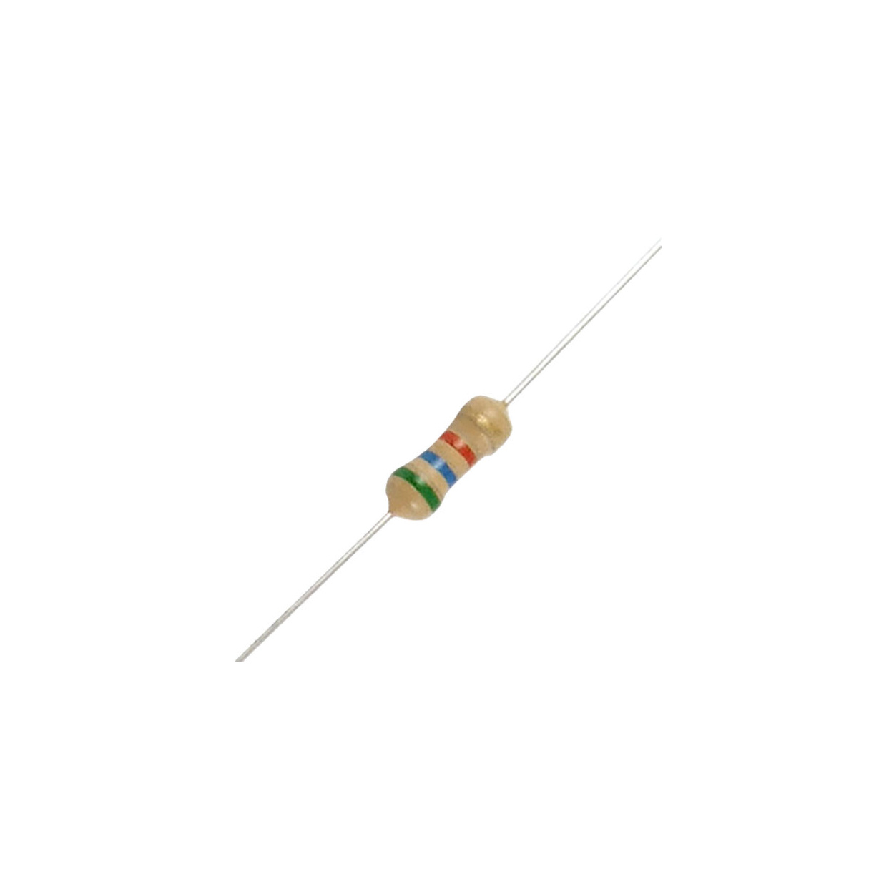
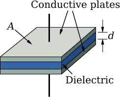
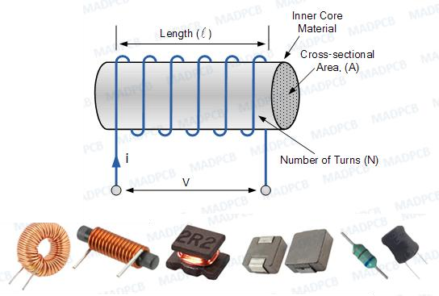
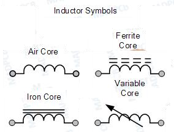

1.1 Definition of Electronics
Electronics is one of the most important branches of engineering that deals with the behaviour, control and utilization of electrons in electronic devices and circuits.
“According to IRE (Institute of Radio Engineering), Electronics is a Branch of Science and Engineering which deals with the study of electronic devices, its processing and utilization.”
Electronics studies devices such as Diodes, Transistors, ICs, Sensors and Microprocessors which are used for processing, controlling and transmitting electrical signals.
1.2 Applications of Electronics
Electronics plays a crucial role across many sectors, from defense and industrial automation to healthcare, telecommunication and domestic applications.

1. Defense
Radar, missile guidance, drones, secure satellite communication, sonar and night vision systems enhance national security.

2. Industrial & Instrumentation
PLCs, robots, inverters, oscilloscopes, multimeters, flow meters and pressure sensors are widely used for automation.

3. Medical
MRI, CT scanners, ECG machines, pacemakers, ultrasound equipment and pulse oximeters assist in diagnosis and patient care.

4. Telecommunication
Smartphones, satellite communication, fiber optic networks and wireless communication enable global connectivity.

5. Domestic
Smart TVs, refrigerators, washing machines, microwave ovens, smart lighting and wearable devices improve daily life.
1.3 Definition of Electrical Engineering
Electrical Engineering is the branch of engineering concerned with the generation, transmission, distribution and utilization of electrical power.
Electrical Engineering is the branch of engineering that deals with the study of generation, transmission, distribution and utilization of electrical power using devices such as generators, transformers, motors and transmission lines.
1.4 Applications of Electrical Engineering
Electrical engineering deals with the generation, transmission, distribution and utilization of electrical power for domestic, commercial and industrial applications.

1. Power Generation
Thermal, hydro, solar and wind power plants generate electricity which is supplied through transformers, substations and transmission lines.

2. Industrial
Electric motors, generators, industrial drives and protection systems operate industrial machines efficiently.
3. Transportation
Electric vehicles, metro railways, elevators, escalators and EV charging stations depend on electrical power.

4. Agriculture
Irrigation pumps, solar pumping systems, dairy equipment, grain processing machines and cold storage improve agricultural productivity.

5. Domestic & Commercial
Lighting systems, HVAC, water pumps, electrical wiring and commercial power distribution are essential in buildings.
1.5 Difference Between Electrical & Electronics Engineering
Electrical Engineering mainly deals with power, whereas Electronics Engineering deals with signals and information processing.
| Electrical Engineering | Electronics Engineering |
|---|---|
| High voltage & high current systems | Low voltage & low current systems |
| Mainly uses AC | Mainly uses DC |
| Generation, transmission & distribution of power | Control, processing & communication of signals |
| Generators, Transformers, Motors | Diodes, Transistors, ICs, Microprocessors |
| Power plants, substations, electric motors | Mobile phones, computers, televisions, medical devices |
⚡ Electrical Engineering = Power Engineering
Generation • Transmission • Distribution • Utilization
🔋 Electronics Engineering = Signal Engineering
Control • Processing • Communication • Automation
2. Basic Electrical Quantities
Electrical quantities are the measurable parameters used to describe the behavior of an electrical circuit. The three most fundamental quantities are Current (I), Voltage (V), and Power (P).
2.1 Electric Current (I)
Definition
Electric current is the rate of flow of electric charge through a conductor. It is the movement of electrons caused by the applied voltage.
Electric Current is the rate at which electric charge flows through a conductor.
Current • Electric Current • Flow of Charge • Line Current
Unit & Symbol
| Quantity | Value |
|---|---|
| Symbol | I |
| SI Unit | Ampere (A) |
| Measuring Instrument | Ammeter |
Formula
Where:
- I = Current (Ampere)
- Q = Electric Charge (Coulomb)
- t = Time (Second)
Current Flow Diagram
Worked Example
Question: If 10 Coulombs of charge flow in 2 seconds, calculate the current.
Given: Q = 10 C, t = 2 s
I = Q / t
I = 10 / 2 = 5 A
2.2 Potential Difference (Voltage)
Definition
Potential Difference is the work done to move one Coulomb of charge from one point to another. It is the driving force that causes current to flow.
Potential Difference is the amount of work done in moving a unit positive charge between two points in an electrical circuit.
Voltage • Potential Difference • Electric Potential • EMF (when produced by a battery)
Unit & Symbol
| Quantity | Value |
|---|---|
| Symbol | V |
| SI Unit | Volt (V) |
| Measuring Instrument | Voltmeter |
Formula
Where:
- V = Voltage (Volt)
- W = Work Done (Joule)
- Q = Charge (Coulomb)
Voltage Across a Load
Worked Example
Question: A battery performs 24 J of work to move 6 C of charge. Find the voltage.
Given: W = 24 J, Q = 6 C
V = W / Q
V = 24 / 6 = 4 Volt
2.3 Electrical Power (P)
Definition
Electrical Power is the rate at which electrical energy is consumed or produced. It indicates how much electrical work is performed in one second.
Electrical Power is the rate of conversion of electrical energy into another form of energy.
Unit & Symbol
| Quantity | Value |
|---|---|
| Symbol | P |
| SI Unit | Watt (W) |
| Measuring Instrument | Wattmeter |
Formula
Where:
- P = Power (Watt)
- V = Voltage (Volt)
- I = Current (Ampere)
Power Consumed by Load
Worked Example
Question: A bulb operates at 12 V and draws 2 A. Calculate the power.
Given: V = 12 V, I = 2 A
P = V × I
P = 12 × 2 = 24 Watt
Important Concept
- Voltage (V) provides the driving force.
- Current (I) is the flow of electrons caused by voltage.
- Power (P) is the electrical energy consumed by the load.
Power Triangle
From the Power Triangle:
V = P / I
I = P / V
2.4 Summary of Basic Electrical Quantities
| Quantity | Symbol | SI Unit | Formula | Meaning |
|---|---|---|---|---|
| Electric Current | I | Ampere (A) | I = Q / t | Flow of electric charge |
| Voltage | V | Volt (V) | V = W / Q | Driving force of current |
| Electrical Power | P | Watt (W) | P = V × I | Rate of electrical energy consumption |
3. Passive Electronic Components
Passive electronic components do not generate electrical energy. They either oppose, store or release electrical energy. The three fundamental passive components are Resistor, Capacitor and Inductor.
3.1 Resistor
A resistor is an electrical component that limits or regulates the flow of electric current in a circuit. It is one of the most basic and widely used components in electronics.

A resistor is a passive two-terminal device that opposes the flow of electric current by converting electrical energy into heat. The amount of resistance it offers is measured in Ohm (Ω).
| Component | Resistor |
|---|---|
| Value | Resistance |
| Symbol | |
| Unit | Ohm (Ω) |
| Denoted By | R |
Linear
- Fixed Resistors
- Carbon Composition
- Wire Wound
- Metal Film
- Variable Resistors
- Potentiometer
- Trimmer
- Rheostat
Non-Linear
- Thermistor (TDR)
- LDR
- VDR
3.2 Capacitor
A capacitor is a passive electrical component that stores electrical energy in the form of an electric field between two conductive plates separated by an insulating material called dielectric.

A capacitor stores electrical energy temporarily and releases it whenever required. The amount of stored energy depends upon its capacitance.
| Component | Capacitor |
|---|---|
| Value | Capacitance |
| Symbol | C |
| Unit | Farad (F) |
| Denoted By | C |
3.3 Inductor
An inductor is a passive electronic component that stores energy in the form of a magnetic field whenever electric current flows through its coil.

An inductor opposes sudden changes in current by generating a magnetic field. Its ability to store magnetic energy is called Inductance.
| Component | Inductor |
|---|---|
| Value | Inductance |
| Symbol | L |
| Unit | Henry (H) |
| Denoted By | L |

### Practical Units | Unit | Value | |---|---:| | Henry | 1 H | | Millihenry | 10⁻³ H | | Microhenry | 10⁻⁶ H | ### Types of Inductors